21 Spectral analysis
(Adapted from WP 4.1 Sprachtechnologie (Vertiefung) course material by Jonathan Harrington and Ulrich Reubold)
First of all, we need to install the package gridExtra, which allows for arranging several plots from ggplot2 into a single figure:
Let us now load the needed libraries and create a demo emuDB to play with:
library(gridExtra)
library(emuR)
library(tidyverse) # containing - amongst others - dplyr, purrr, tibble, and ggplot2
# create demo data in directory provided by the tempdir() function
# (of course other directory paths may be chosen)
create_emuRdemoData(dir = tempdir())
# create path to demo data directory, which is
# called "emuR_demoData"
demo_data_dir = file.path(tempdir(), "emuR_demoData")
# create path to ae_emuDB which is part of the demo data
path2ae = file.path(demo_data_dir, "ae_emuDB")
# load database
ae = load_emuDB(path2ae, verbose = F)
list_ssffTrackDefinitions(ae)The ae emuDB has ssffTrackDefinitions for pre-calculated so-called dft-files containing dft data. DFT stands for “Discrete Fourier Transform” which converts a signal into a time-series of spectra. This transformation can be done with wrassp’s function dftSpectrum() which - despite of its name - actually uses a Fast Fourier Transform algorithm. The function produces a “short-term spectral analysis of the signal in ?wrassp::dftSpectrum).
The procedure to calculate your own dft-files is identical to that of calculating formants, or fundamental frequency, or any other function that is available in wrassp (see also this document ):
In this case, there is no need to subset the data in order to use speaker specific settings, not only because there is only one speaker in our database, but also because dftSpectrum() simply doesn’t need to be adjusted to speaker-specific features.
We then query for a segment list and then get the trackdata:
sS.sl = query(ae,
"[Phonetic == s|S]")
sS.dft = get_trackdata(ae,
seglist = sS.sl,
ssffTrackName = "dft",
resultType = "tibble",
cut = 0.5) The following command can be used to look at the resulting data
Let us now list the column names of the extracted trackdata object:
## [1] "sl_rowIdx" "labels" "start"
## [4] "end" "db_uuid" "session"
## [7] "bundle" "start_item_id" "end_item_id"
## [10] "level" "attribute" "start_item_seq_idx"
## [13] "end_item_seq_idx" "type" "sample_start"
## [16] "sample_end" "sample_rate" "times_orig"
## [19] "times_rel" "times_norm" "T1"
## [22] "T2" "T3" "T4"
## [25] "T5" "T6" "T7"
## [28] "T8" "T9" "T10"
## [31] "T11" "T12" "T13"
## [34] "T14" "T15" "T16"
## [37] "T17" "T18" "T19"
## [40] "T20" "T21" "T22"
## [43] "T23" "T24" "T25"
## [46] "T26" "T27" "T28"
## [49] "T29" "T30" "T31"
## [52] "T32" "T33" "T34"
## [55] "T35" "T36" "T37"
## [58] "T38" "T39" "T40"
## [61] "T41" "T42" "T43"
## [64] "T44" "T45" "T46"
## [67] "T47" "T48" "T49"
## [70] "T50" "T51" "T52"
## [73] "T53" "T54" "T55"
## [76] "T56" "T57" "T58"
## [79] "T59" "T60" "T61"
## [82] "T62" "T63" "T64"
## [85] "T65" "T66" "T67"
## [88] "T68" "T69" "T70"
## [91] "T71" "T72" "T73"
## [94] "T74" "T75" "T76"
## [97] "T77" "T78" "T79"
## [100] "T80" "T81" "T82"
## [103] "T83" "T84" "T85"
## [106] "T86" "T87" "T88"
## [109] "T89" "T90" "T91"
## [112] "T92" "T93" "T94"
## [115] "T95" "T96" "T97"
## [118] "T98" "T99" "T100"
## [121] "T101" "T102" "T103"
## [124] "T104" "T105" "T106"
## [127] "T107" "T108" "T109"
## [130] "T110" "T111" "T112"
## [133] "T113" "T114" "T115"
## [136] "T116" "T117" "T118"
## [139] "T119" "T120" "T121"
## [142] "T122" "T123" "T124"
## [145] "T125" "T126" "T127"
## [148] "T128" "T129" "T130"
## [151] "T131" "T132" "T133"
## [154] "T134" "T135" "T136"
## [157] "T137" "T138" "T139"
## [160] "T140" "T141" "T142"
## [163] "T143" "T144" "T145"
## [166] "T146" "T147" "T148"
## [169] "T149" "T150" "T151"
## [172] "T152" "T153" "T154"
## [175] "T155" "T156" "T157"
## [178] "T158" "T159" "T160"
## [181] "T161" "T162" "T163"
## [184] "T164" "T165" "T166"
## [187] "T167" "T168" "T169"
## [190] "T170" "T171" "T172"
## [193] "T173" "T174" "T175"
## [196] "T176" "T177" "T178"
## [199] "T179" "T180" "T181"
## [202] "T182" "T183" "T184"
## [205] "T185" "T186" "T187"
## [208] "T188" "T189" "T190"
## [211] "T191" "T192" "T193"
## [214] "T194" "T195" "T196"
## [217] "T197" "T198" "T199"
## [220] "T200" "T201" "T202"
## [223] "T203" "T204" "T205"
## [226] "T206" "T207" "T208"
## [229] "T209" "T210" "T211"
## [232] "T212" "T213" "T214"
## [235] "T215" "T216" "T217"
## [238] "T218" "T219" "T220"
## [241] "T221" "T222" "T223"
## [244] "T224" "T225" "T226"
## [247] "T227" "T228" "T229"
## [250] "T230" "T231" "T232"
## [253] "T233" "T234" "T235"
## [256] "T236" "T237" "T238"
## [259] "T239" "T240" "T241"
## [262] "T242" "T243" "T244"
## [265] "T245" "T246" "T247"
## [268] "T248" "T249" "T250"
## [271] "T251" "T252" "T253"
## [274] "T254" "T255" "T256"
## [277] "T257"sS.dft contains spectral data, i.e. in this case 257 amplitude values per frame (in our case, we only have one frame per segment). So there are track colums T1 … T257 (and there could be even more - depending on the Nyquist frequency - see below) instead of only one track column (as it would be the case in e.g. fundamental frequency data) or 4 or 5 signal tracks as it would be the case for formants. Not only is it hard to plot data that is structured like this, we still miss some important information: the frequencies with which the amplitude values in T1…T257 are associated with.
We could calculate these frequencies by dividing the sample rate of the signals
## [1] 20000by 2, in order to calculate the Nyquist frequency, and then by creating 257-1 equal-sized steps between 0 and this Nyquist frequency.
## [1] 0.000 78.125 156.250 234.375 312.500## [1] 19609.38 19687.50 19765.62 19843.75 19921.88 20000.00However, we don’t have to do so, as another function of emuR called convert_wideToLong() does that for us when we set the parameter calcFreq to TRUE. As the name of the function suggests, the 257 columns that contain amplitudes will be transformed to 257 observations per frame in one single column:
## # A tibble: 5,397 x 23
## sl_rowIdx labels start end db_uuid session bundle start_item_id
## <int> <chr> <dbl> <dbl> <chr> <chr> <chr> <int>
## 1 1 s 483. 567. 0fc618… 0000 msajc… 151
## 2 1 s 483. 567. 0fc618… 0000 msajc… 151
## 3 1 s 483. 567. 0fc618… 0000 msajc… 151
## 4 1 s 483. 567. 0fc618… 0000 msajc… 151
## 5 1 s 483. 567. 0fc618… 0000 msajc… 151
## 6 1 s 483. 567. 0fc618… 0000 msajc… 151
## 7 1 s 483. 567. 0fc618… 0000 msajc… 151
## 8 1 s 483. 567. 0fc618… 0000 msajc… 151
## 9 1 s 483. 567. 0fc618… 0000 msajc… 151
## 10 1 s 483. 567. 0fc618… 0000 msajc… 151
## # … with 5,387 more rows, and 15 more variables: end_item_id <int>,
## # level <chr>, attribute <chr>, start_item_seq_idx <int>,
## # end_item_seq_idx <int>, type <chr>, sample_start <int>,
## # sample_end <int>, sample_rate <int>, times_orig <dbl>,
## # times_rel <dbl>, times_norm <dbl>, track_name <chr>,
## # track_value <dbl>, freq <dbl>So, instead of columns named T1, T2, … Tn, we now have three other columns:
track_name: contains “T1” … “Tn”track_value: contains the (in this case 257) amplitudes per framefreq: the frequencies with which the aforementioned amplitudes are associated with
As all observations (i.e. the amplitudes) are now in one column (and frequency information in another column), we can easily plot this as xy-plot with ggplot2:
# plot the spectral slices
ggplot(sS.dftlong) +
aes(x = freq, y = track_value,col=labels) +
geom_line() +
facet_wrap( ~ sl_rowIdx + labels)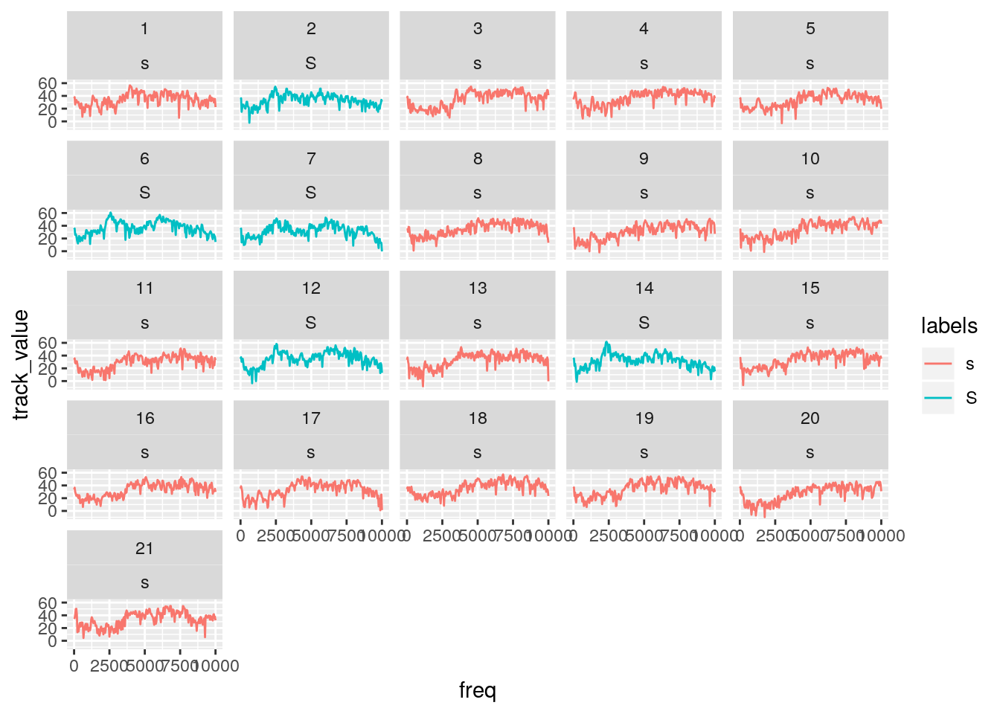
You could also use geom_area() (but be careful: use geom_area() only if you intend to plot individual slices):
ggplot(sS.dftlong) +
aes(x = freq, y = track_value) +
geom_area() +
facet_wrap( ~ sl_rowIdx + labels)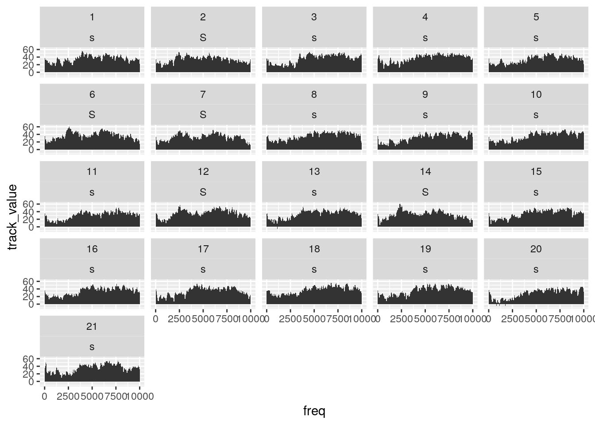
We can also summarise this easily to one averaged slice per fricative type:
sS.dftlong.mean = sS.dftlong%>%
group_by(labels,freq)%>%
summarise(track_value=mean(track_value))
ggplot(sS.dftlong.mean) +
aes(x = freq, y = track_value, col=labels) +
geom_line() 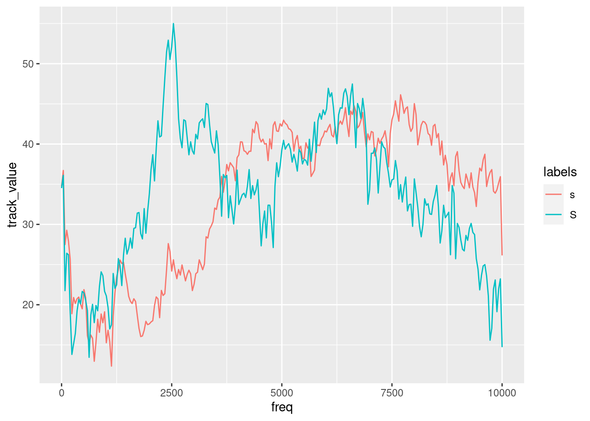
21.1 How to quantify differences between spectra?
When we look at the figure above, showing average spectra at the temporal midpoints of two fricative categories, it seems that one easy way to distinguish between the two would be to concentrate on the differences in the amplitudes in the 2000 - 3000 Hz range. We could e.g. take the mean in that frequency range across all tokens of the two types in order to check whether it is consistently the case that the alveolar contains much less energy in that frequency range than its postalveolar counterpart:
sS2to3thousandHz = sS.dftlong%>%
filter(freq>=2000 & freq <=3000)%>%
group_by(labels,sl_rowIdx)%>%
summarise(amplitudes_2000_3000Hz = mean(track_value))
ggplot(sS2to3thousandHz)+
aes(x=labels,y=amplitudes_2000_3000Hz,col=labels)+
geom_boxplot()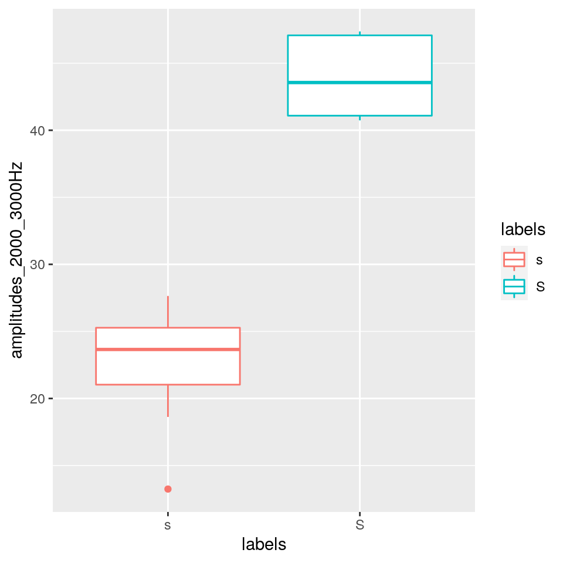
However, it would be more “elegant” to consider some aspects of the general “form” of a spectral slice.
Each spectral slice is simply a vector of numbers (that has some hidden association to another verctor of the same size, i.e. the frequencies with which the amplitude values are associated with). One way of quantifying a numeric vector by a (usually smaller) set of numbers is the Discrete Cosine Transform.
21.2 Discrete Cosine Transform (DCT)
(See also this document.)
A discrete cosine transform (DCT) expresses a finite sequence of n data points in terms of a sum of cosine functions oscillating at different frequencies.
The amplitudes of the cosine functions, k0, k1, k2, … kn-1, are called DCT coefficients.
- k0: the amplitude of a cosine with a frequency of 0
- k1: the amplitude of a cosine with a frequency of 0.5
- k2: the amplitude of a cosine with a frequency of 1
- …
- kn-1: the amplitude of a cosine with a frequency of 0.5*(n-1)
If you sum up all these DCT coefficients, you will reconstruct exactly the very same signal that was input for the DCT analysis.
Higher DCT coefficients correspond to the details of the “finite sequence of n data points”, whereas lower coefficients represent the more general characteristics. At least the three lowest ones, k0, k1, and k2, correspond (but are not equal) to the following three statistical descriptive features: k0 is linearly related to the sequence’s mean, k1 to the sequence’s slope, and k2 to its curvature. See e.g.:

Because we are dealing with straight lines, k2 is here always 0 (and is therefore not shown in the fourth panel of the figure). However, the next plot shows k2 of four quadratic polynomials:
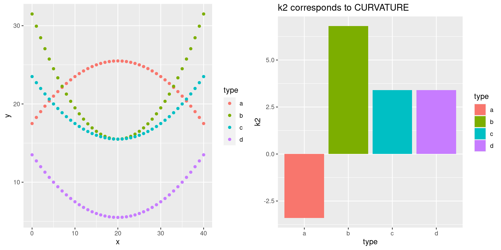
So, if we want to get rid of too much detail (e.g. in signals frequency perturbations like jitter or error measurements), we can use the lower numbers of DCT to smooth the signal. We can apply DCT to a signal by means of the emuR function dct(...,m=NULL,fit=TRUE), with ... being one of the columns of an emuRtrackdata tibble:
# calculate spectra reconstructed by dct()
sS.dftlong.mean = sS.dftlong.mean %>%
group_by(labels) %>%
mutate(reconstructed = emuR::dct(track_value, fit = T))
#plot the reconstructed spectral slices
ggplot(sS.dftlong.mean) +
aes(x = freq, y = reconstructed, col = labels) +
geom_line()# this is obviously exactly the same as the original data:
ggplot(sS.dftlong.mean) +
aes(x = freq, y = track_value,col=labels) +
geom_line()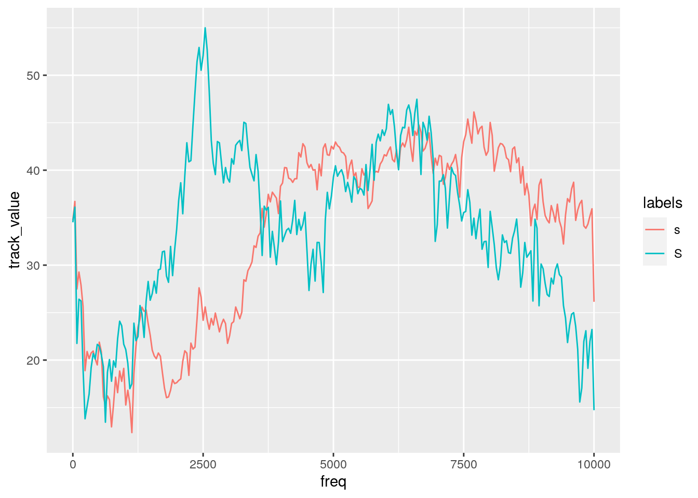
However, if we use the parameter m in order to reduce the complexity of the spectral slices, they will become smoother:
sS.dftlong.mean = sS.dftlong.mean %>%
group_by(labels) %>%
mutate(#you can't use m=0 in order to calculate k0 only
smoothed_k0tok1 = emuR::dct(track_value, m = 1, fit = T),
smoothed_k0tok2 = emuR::dct(track_value, m = 2, fit = T),
smoothed_k0tok3 = emuR::dct(track_value, m = 3, fit = T),
smoothed_k0tok4 = emuR::dct(track_value, m = 4, fit = T),
smoothed_k0tok5 = emuR::dct(track_value, m = 5, fit = T),
smoothed_k0tok6 = emuR::dct(track_value, m = 6, fit = T))
ggplot(sS.dftlong.mean) +
aes(x = freq, y = smoothed_k0tok6, col = labels) +
geom_line() +
ggtitle("Smoothed with 7 DCT-coefficients ()")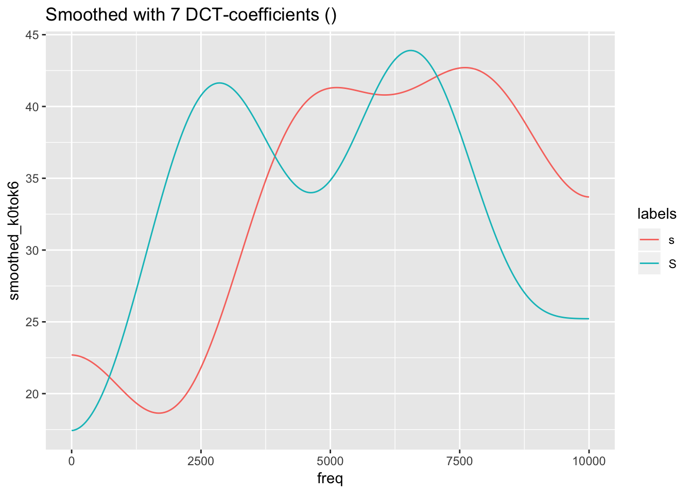
ggplot(sS.dftlong.mean) +
aes(x = freq, y = smoothed_k0tok5, col = labels) +
geom_line() +
ggtitle("Smoothed with 6 DCT-coefficients (m=5)")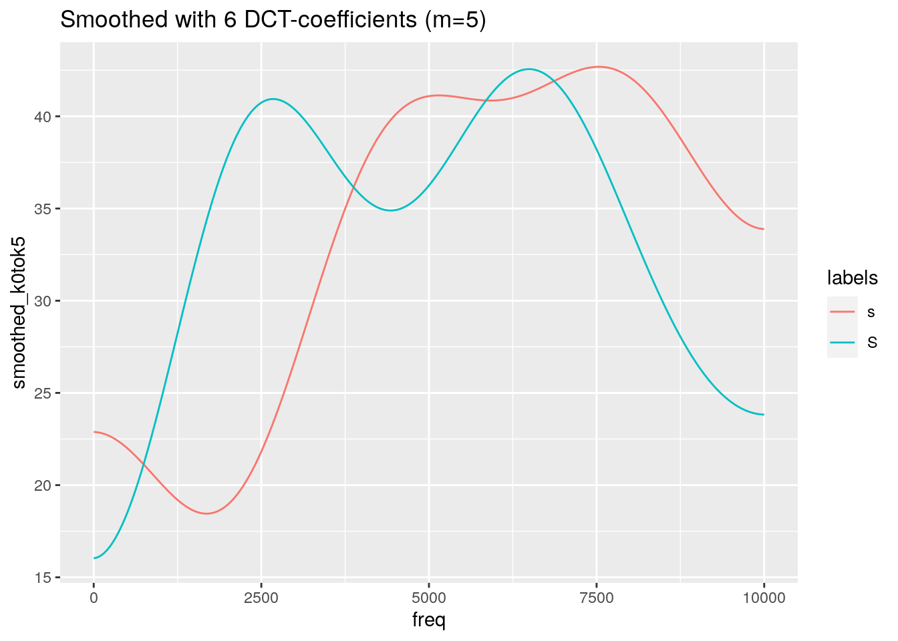
ggplot(sS.dftlong.mean) +
aes(x = freq, y = smoothed_k0tok4, col = labels) +
geom_line() +
ggtitle("Smoothed with 5 DCT-coefficients (m=4)")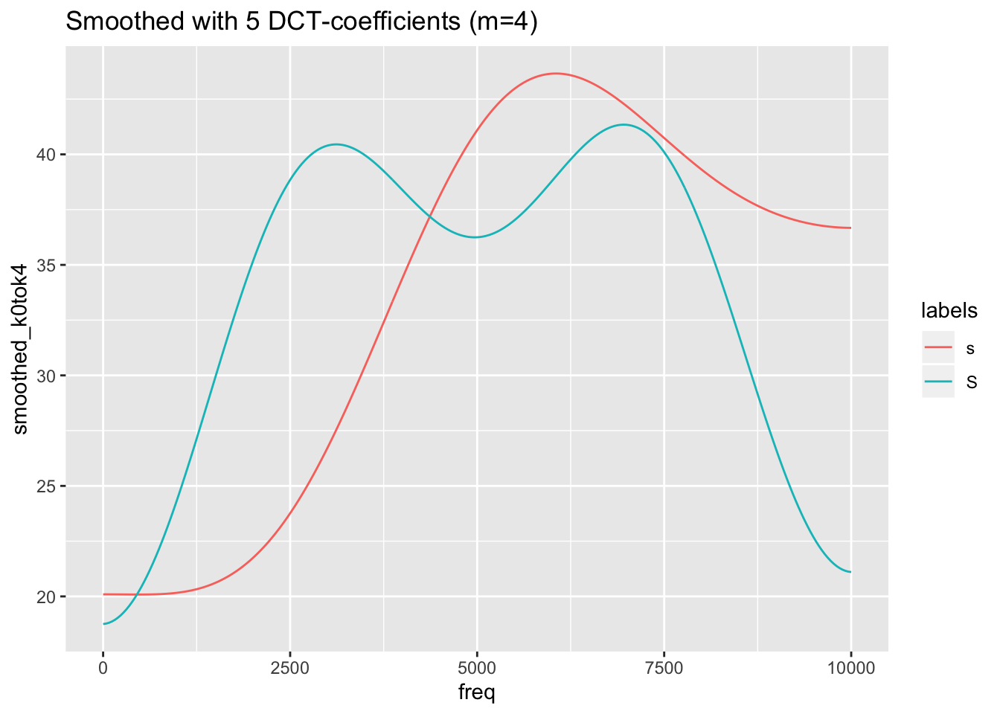
ggplot(sS.dftlong.mean) +
aes(x = freq, y = smoothed_k0tok3, col = labels) +
geom_line() +
ggtitle("Smoothed with 4 DCT-coefficients (m=3)")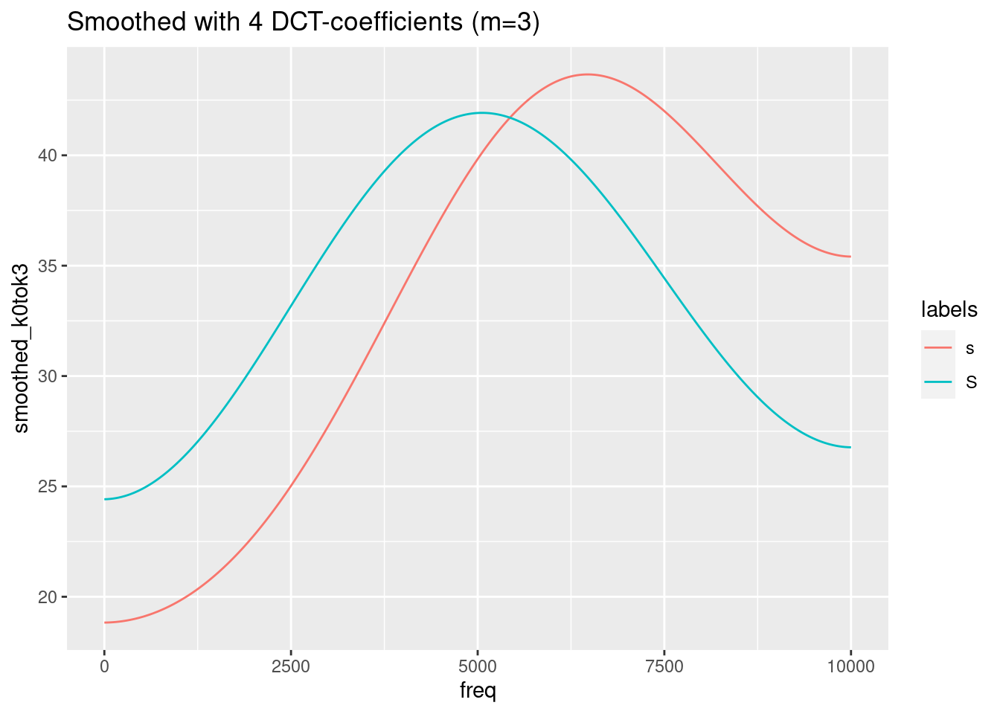
ggplot(sS.dftlong.mean) +
aes(x = freq, y = smoothed_k0tok2, col = labels) +
geom_line() +
ggtitle("Smoothed with 3 DCT-coefficients (m=2)")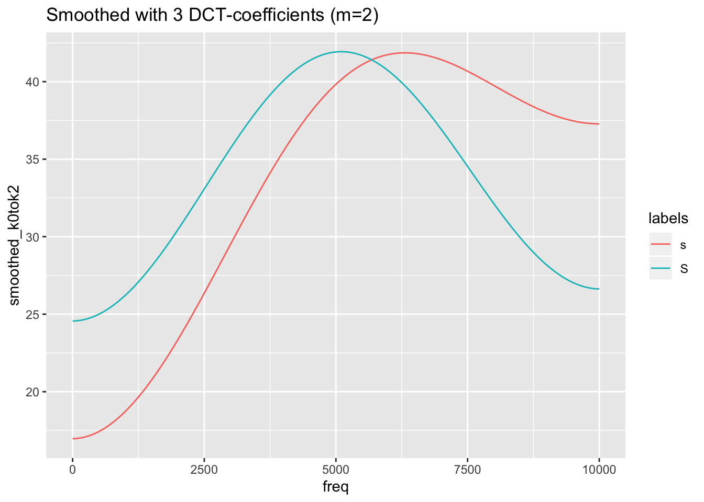
ggplot(sS.dftlong.mean) +
aes(x = freq, y = smoothed_k0tok1, col = labels) +
geom_line() +
ggtitle("Smoothed with 2 DCT-coefficients (m=1)")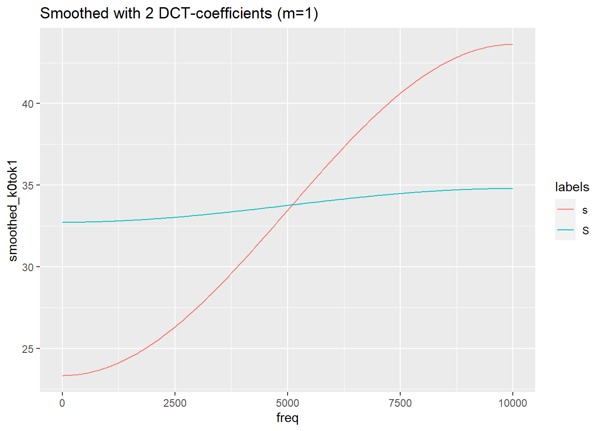
Remember, that the last figure shows only two (inverted) cosine functions of a certain amplitude with frequency 0.5. This is obviously not the best representation of the spectra of /s/ and /ʃ/. We need to find a compromise between too much and too less information. In this specific case, m = 4 (= 5 DCT-coefficients) seems to be the best compromise.
We can, of course, apply the dct-function also to the non-averaged data:
# plot the spectral slices
ggplot(sS.dftlong) +
aes(x = freq, y = track_value, col = labels) +
geom_line() +
facet_wrap( ~ sl_rowIdx + labels)sS.dftlong = sS.dftlong %>%
group_by(sl_rowIdx) %>%
mutate(smoothed = emuR::dct(track_value, m = 4, fit = T))
# plot the smoothed slices
ggplot(sS.dftlong) +
aes(x = freq, y = smoothed, col = labels) +
geom_line() +
facet_wrap( ~ sl_rowIdx + labels)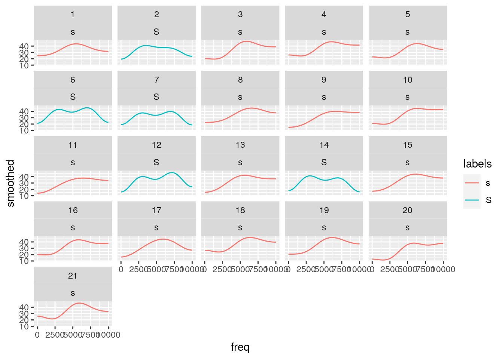
# or plot original and smoothed slices
ggplot(sS.dftlong) +
aes(x = freq, y = track_value, col = labels) +
geom_line() +
geom_line(aes(y = smoothed), lwd = 1.2) +
facet_wrap( ~ sl_rowIdx + labels)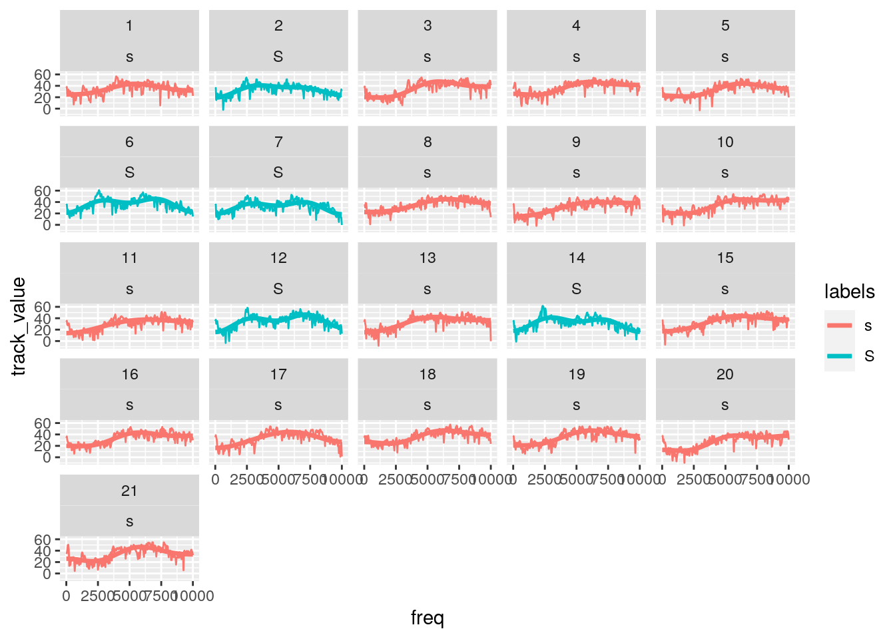
21.3 DCT coefficients
Until now, we have applied dct() always with the parameter fit set to TRUE, i.e. we have always analysed and resynthesized the data in one step. We haven’t seen so far the outcome of the analysis, i.e. the coefficients of the DCT. They might, as the example above has shown, be capable of a simple quantification of certain features of the signal/spectral slice (i.e. the mean, the slope, and the curvature of the signal).
Let’s have a look how useful these coefficients may be. In order to calculate only a couple of coefficients, we will have to learn a new method of data-wrangling in dplyr, as we cannot use summarise() (as this verb transforms many values into one value) or mutate() (which transformes N values into N other values). The verb to use is called do(). It can handle any function (not only a few, as it is the case with summarise()). There a two specialties of do():
- input has to be a special dataframe, so we have to use
data_frame() - you cannot call a column only by it’s name
ColumnName, but have to use.$ColumnName, where.means “the current dataframe”.
However, this will not be enough: we then have a tibble with m + 1 observations (dct-coefficients in one column); our goal, however, is to have one column per DCT coefficient. In order to do so, we will have to convert the long format to the wide format by means of the spread() function. In order to being able to use this function, we have to introduce another column containing the indexical information which value in column DCT is which DCT-coefficient. Quite complicated, huh?
E.g.
# calculate 6 dct coefficients for each token of s or S
sS.dctCoefficients =
sS.dftlong %>%
group_by(labels, sl_rowIdx) %>%
do(data_frame(DCT = emuR::dct(.$track_value, m = 5, fit = F))) %>%
mutate(DCTCOEF = paste0("k", 0:(table(sl_rowIdx) - 1))) %>%
tidyr::spread(DCTCOEF, DCT)
sS.dctCoefficients## # A tibble: 21 x 8
## # Groups: labels, sl_rowIdx [21]
## labels sl_rowIdx k0 k1 k2 k3 k4 k5
## <chr> <int> <dbl> <dbl> <dbl> <dbl> <dbl> <dbl>
## 1 s 1 48.9 -4.21 -7.41 0.804 1.04 2.58
## 2 s 3 49.4 -11.7 -7.73 2.43 2.31 4.28
## 3 s 4 52.1 -10.3 -5.03 2.54 1.99 2.67
## 4 s 5 46.7 -9.69 -5.28 3.76 1.16 0.648
## 5 s 8 49.7 -10.0 -5.26 2.43 0.162 1.67
## 6 s 9 44.0 -12.2 -5.15 0.494 0.611 1.35
## 7 s 10 48.6 -13.3 -4.32 2.23 1.98 0.738
## 8 s 11 42.4 -9.84 -5.85 -0.190 -0.131 5.35
## 9 s 13 46.4 -9.95 -7.75 -0.655 0.909 4.43
## 10 s 15 48.0 -11.1 -7.09 0.728 0.608 2.54
## # … with 11 more rowsAfter this quite complicated procedure, we can finally have a look at the importance of the first three coefficients as far as the power to divide categories is concerned. Let do it in reverse order:
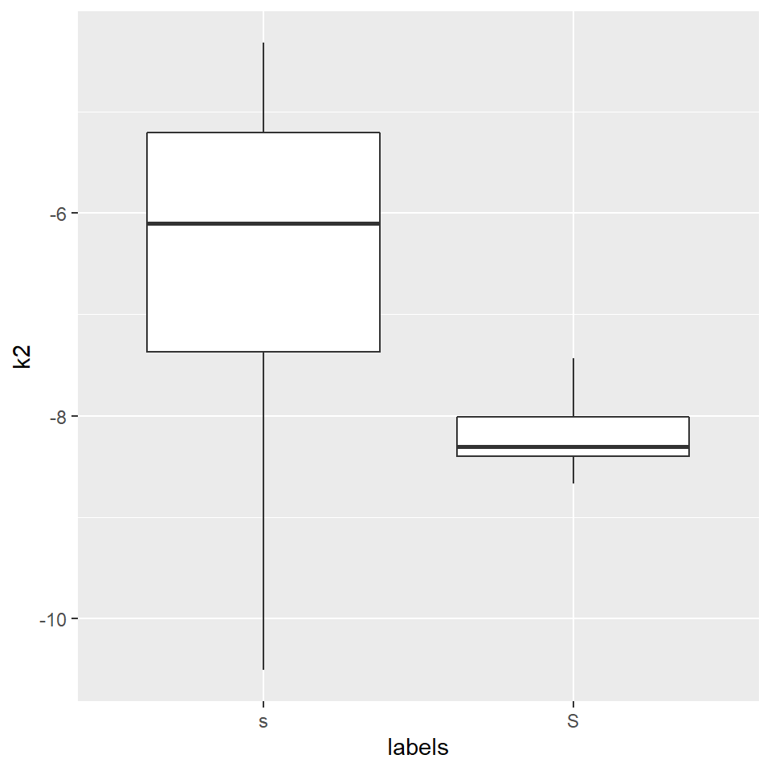
Okay, the curvature seems to be different, but are we sure what this means? A bit more intuitive may be k1, the slope:
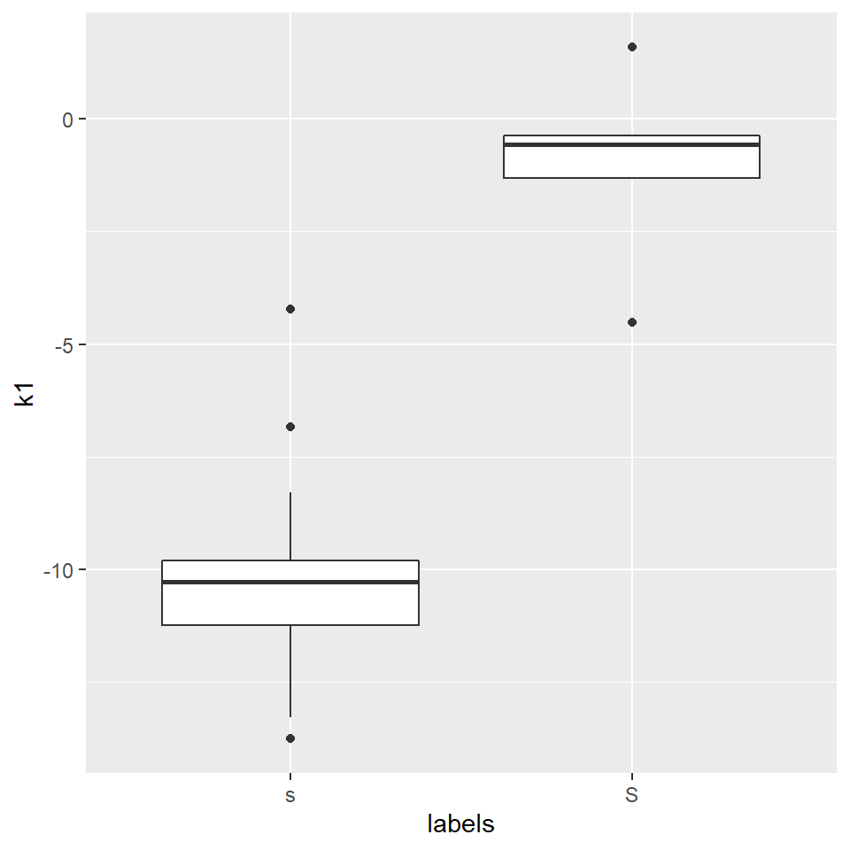
Recall that k1 is inversely correlated with the spectral slopes, so /s/ has a steeper positive slope than /ʃ/ (/ʃ/’s slope is close to zero anyway). This simply means that in the range of 0 to 10000 Hz, /s/ has more energy in the high frequency range than in the low frequency range, whereas the energy is more evenly distributed in that frequency range in /ʃ/.
What about k0?
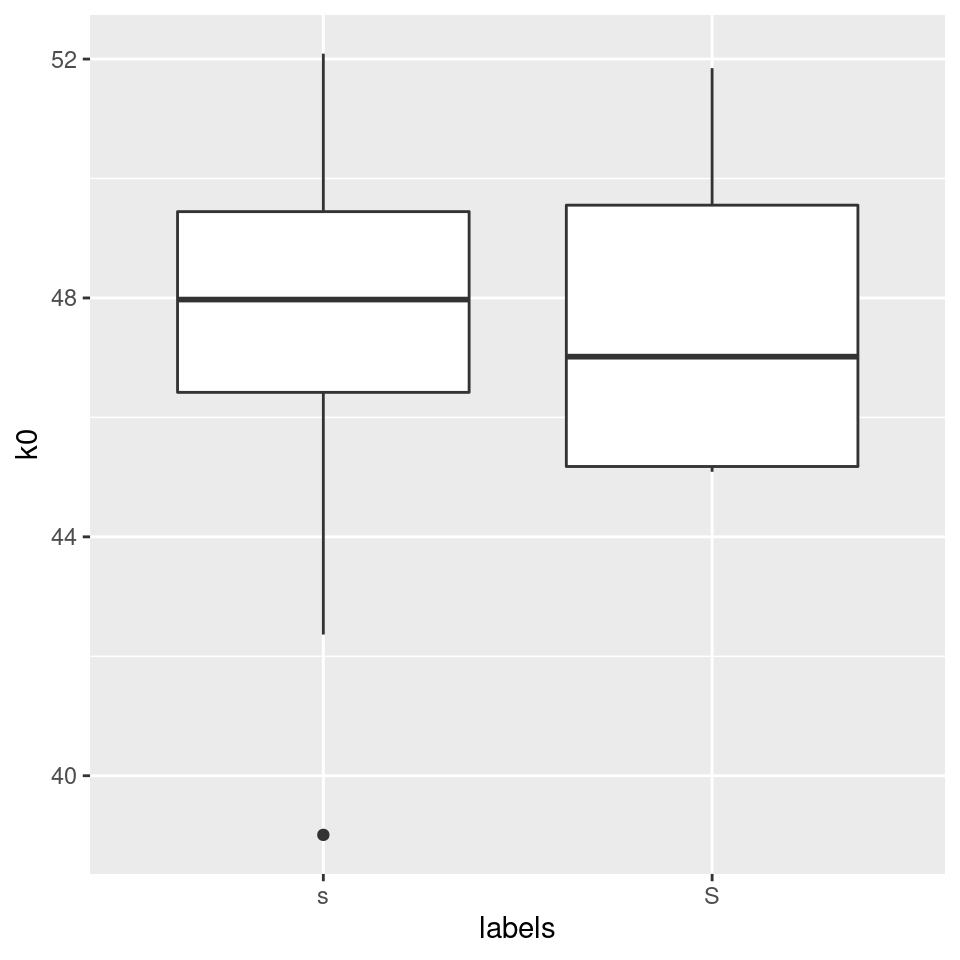
k0 simply corresponds to the mean of the energy in the whole frequency range. This only allows us to find out which of the categories is generally “louder”. As we can see, the mean of the energy is of no use if we want to devide between these two fricatives; it would be much more conveniant to have a function that is able to find the mean of the distribution along the frequency axis (and not along the amplitude axis). There is such a function, which is called spectral moments and which we will discuss next week.
The only thing we could do is to use dct-k0 only in a certain frequency range (e.g. 2000 to 3000 Hz). However, this is equivalent to taking the mean of the energy in that frequency range, as we already had done above:
#repetition: take the mean of the energy in a certain range:
sS2to3thousandHz = sS.dftlong %>%
filter(freq >= 2000 & freq <= 3000) %>%
group_by(labels,sl_rowIdx) %>%
summarise(amplitudes_2000_3000Hz = mean(track_value))
a = ggplot(sS2to3thousandHz) +
aes(x = labels, y = amplitudes_2000_3000Hz, col = labels) +
geom_boxplot()
# or calculate k0 in the same frequency range:
sS.dctCoefficients2to3thousandHz =
sS.dftlong %>%
filter(freq>=2000 & freq <= 3000) %>%
group_by(labels,sl_rowIdx) %>%
do(data_frame(DCT = emuR::dct(.$track_value, m = 5, fit = F))) %>%
mutate(DCTCOEF = paste0("k", 0:(table(sl_rowIdx) - 1))) %>%
tidyr::spread(DCTCOEF, DCT)
b = ggplot(sS.dctCoefficients2to3thousandHz)+
aes(x = labels, y = k0, col = labels)+
geom_boxplot()
grid.arrange(a, b, ncol = 2)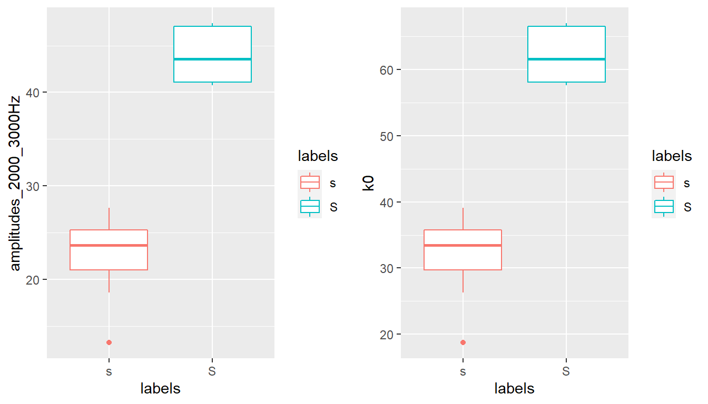
21.3.1 P.S.: Use DCT in order to smooth formant trajectories
Another use-case for dct-smoothing are bumpy formant tracks. Consider e.g. this case:
ae = load_emuDB(path2ae, verbose = F)
i.sl = query(ae,
query = "[Phonetic == i:]")
i.dft = get_trackdata(ae,
seglist = i.sl,
ssffTrackName = "fm",
resultType = "tibble")
i.dft = i.dft %>%
group_by(sl_rowIdx) %>%
mutate(F2_smoothed = emuR::dct(T2, m = 2, fit = T))
ggplot(i.dft) +
aes(x = times_norm, y = T2, group = sl_rowIdx)+
geom_line() +
geom_line(aes(y = F2_smoothed, col = "smoothed"))+
ggtitle("Orig. (black) vs. smoothed (red) F2-tracks in /i:/")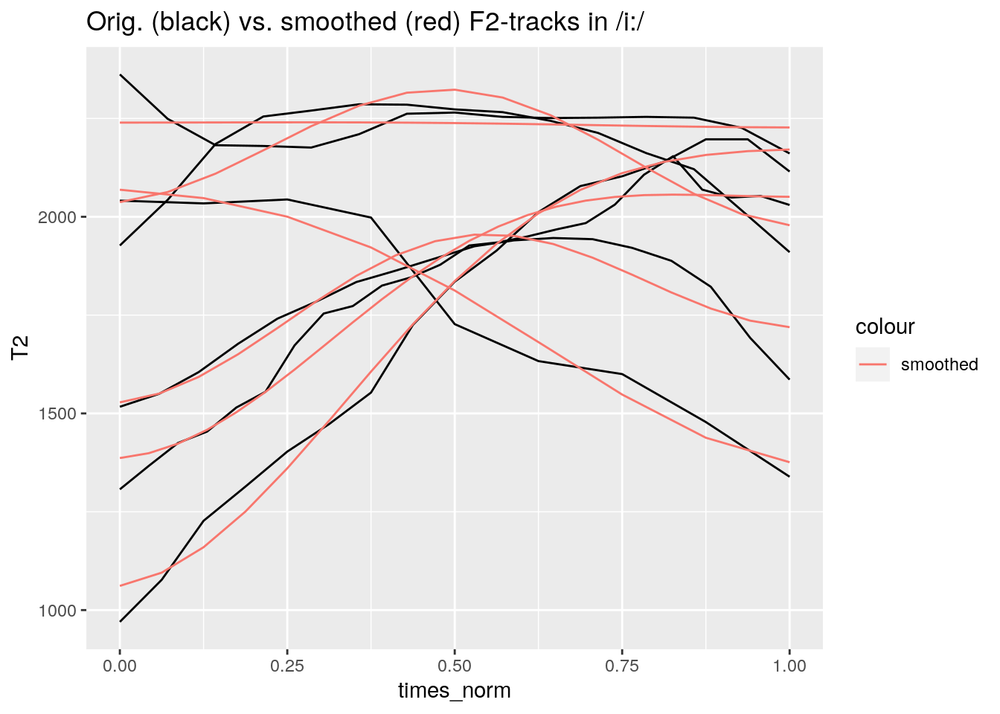
21.4 Spectral moments
The types of parameters discussed in the preceding section can often effectively distinguish between spectra of different phonetic categories. Another useful way of quantifying spectral differences is to reduce the spectrum to a small number of parameters that encode basic properties of its shape. This can be done by calculating what are often called spectral moments (Forrest et al., 1988). The function for calculating moments is borrowed from statistics in which the first four moments describe the mean, variance, skew, and kurtosis of a probability distribution.
Before looking at spectral moments, it will be helpful to consider (statistical) moments in general. The matrix bridge includes some hypotheticaldata of counts that were made on three separate days of the number of cars crossing a bridge at hourly intervals. It looks like this:
## Mon Tues Wed
## 0 9 1 0
## 1 35 1 1
## 2 68 5 7
## 3 94 4 27
## 4 90 27 68
## 5 76 28 87
## 6 62 62 108
## 7 28 76 111
## 8 27 90 57
## 9 4 94 28
## 10 5 68 6
## 11 1 35 0
## 12 1 9 0The first row shows that between midday and 1 p.m., 9 cars were counted on Monday, one on Tuesday, and none on Wednesday. The second row has the same meaning but is the count of cars between 1 p.m. and 2 p.m. The figure below shows the distribution of the counts on these three separate days:
par(mfrow = c(1, 3))
barplot(bridge[,1],
ylab = "Observed number of cars",
main = "Monday")
barplot(bridge[,2],
xlab = "Hours",
main = "Tuesday")
barplot(bridge[,3],
main = "Wednesday") Figure 21.1: Hypothetical data of the count of the number of cars crossing a bridge in a 12 hour period.
There are obviously overall differences in the shape of these distributions. The plot for Monday is skewed to the left, the one for Tuesday is a mirror-image of the Monday data and is skewed to the right. The data for Wednesday is not as dispersed as for the other days: that is, it has more of its values concentrated around the mean.
Leaving aside kurtosis for the present, the following predictions can be made:
Monday’s mean (1st moment) is somewhere around 4-5 p.m. while the mean for Tuesday is a good deal higher (later), nearer 8 or 9 p.m. The mean for Wednesday seems to be between these two, around 6-7 p.m.
The values for Wednesday are not as spread out as for Monday or Tuesday: it is likely therefore that its variance (2nd moment) will be lower than for those of the other two days.
As already observed, Monday, Tuesday, and Wednesday are all likely to have different values for skew (3rd moment).
The core calculation of moments involves the formula:
\(\frac{\sum{f(x-k)^m}}{\sum{f}}\)
in which f is the observed frequency (observed number of cars in this example) x is the class (hours from 0 to 12 in our example), m is the moment (m =1, 2, 3, 4) and k is a constant (see also Harrington, 2009). The above formula can be calculated with a function in the Emu-R library, moments(count, x). In this function, count is the observed frequency of occurence and x the class. So the first four moments for the Monday data are given by
## [1] 4.17200000 4.42241600 0.47063226 0.08290827while all four moments for Monday, Tuesday, Wednesday are given by:
## Mon Tues Wed
## [1,] 4.17200000 7.82800000 5.99200000
## [2,] 4.42241600 4.42241600 2.85193600
## [3,] 0.47063226 -0.47063226 -0.07963716
## [4,] 0.08290827 0.08290827 -0.39367681As expected, the first moment (row 1) is at about 4-5 p.m. for Monday, close to 6 p.m. for Wednesday and higher (later) than this for Tuesday. Also, as expected, the variance (second moment, row 2), whose unit in this example is \(hours^2\), is least for Wednesday.
The skew is a dimensionless number that varies between -1 and 1. When the skew is zero, then the values are distributed evenly about the mean, as they are for a Gaussian normal distribution. When the values are skewed to the left so that there is a longer tail to the right, then kurtosis is positive (as it is for the Monday data); the skew is negative when the values are skewed to the right (as for the Tuesday data).
Finally, the kurtosis is also a dimensionless number that is zero for a normal Gaussian distribution. Kurtosis is often described as a measure of how ‘peaked’ a distribution is. In very general terms, if the distribution is flat – that is, its shape looks rectangular – then kurtosis is negative, whereas if the distribution is peaked, then kurtosis is typically positive. However, this general assumption only applies if the distributions are not skewed (skewed distributions tend to have positive kurtosis) and kurtosis depends not just on the peak but also on whether there are high values at the extremes of the distribution (see Wuensch, 2006 for some good examples of this). For all these reasons - and in particular in view of the fact that spectra are not usually symmetrical about the frequency axis - it is quite difficult to use kurtosis to make predictions about the spectral differences between phonetic categories.
When spectral moments are calculated, then x and f in both (1) and corresponding R function are the frequency in Hz and the corresponding dB values (and not the other way round!). This can be understood most easily by having another look at the plots of spectral slices above and the observation that a spectral slice has a horizontal axis of frequency in Hz and a vertical axis of dB. On this assumption, the calculation of the 1st spectral moment results in a value in \(Hz\) (analogous to a value in hours for the worked example above), and the second spectral moment a value in \(Hz^2\), while the 3rd and 4th spectral moments are dimensionless, as before.
In order to apply the moments function to our spectral data in the long format tibble, we use the same procedure that we had used in order to calculate dct-coefficients:
sS.moments =
sS.dftlong %>%
group_by(labels,sl_rowIdx) %>%
do(data_frame(Moments = emuR::moments(.$track_value,.$freq))) %>%
mutate(Momentnumbers = paste0("Moment",1:(table(sl_rowIdx)))) %>%
tidyr::spread(Momentnumbers, Moments)
sS.moments## # A tibble: 21 x 6
## # Groups: labels, sl_rowIdx [21]
## labels sl_rowIdx Moment1 Moment2 Moment3 Moment4
## <chr> <int> <dbl> <dbl> <dbl> <dbl>
## 1 s 1 5238. 7315137. -0.121 -0.978
## 2 s 3 5660. 6964718. -0.323 -0.776
## 3 s 4 5544. 7485010. -0.293 -0.923
## 4 s 5 5569. 7278247. -0.308 -0.903
## 5 s 8 5557. 7312230. -0.292 -0.934
## 6 s 9 5790. 6988020. -0.329 -0.837
## 7 s 10 5770. 7241899. -0.362 -0.840
## 8 s 11 5653. 7033307. -0.301 -0.845
## 9 s 13 5606. 6847687. -0.258 -0.867
## 10 s 15 5653. 6923524. -0.281 -0.868
## # … with 11 more rowsHowever, the above command may sometimes fail. This is because some of the dB values can be negative and yet the calculation of moments assumes that the values for the observations are positive (it would never be possible, for example, to have a negative value in counting how many cars crossed the bridge in an hourly time interval!). To overcome this problem, the dB values are typically rescaled in calculating moments so that the minimum dB value is set to zero (as a result of which all dB values are positive and the smallest value is 0 dB). The moments() function does this whenever the argument minval = T is included. Thus:
sS.moments =
sS.dftlong %>%
group_by(labels, sl_rowIdx) %>%
do(data_frame(Moments = emuR::moments(.$track_value,.$freq, minval = TRUE))) %>%
mutate(Momentnumbers = paste0("Moment", 1:(table(sl_rowIdx)))) %>%
tidyr::spread(Momentnumbers, Moments)
sS.moments## # A tibble: 21 x 6
## # Groups: labels, sl_rowIdx [21]
## labels sl_rowIdx Moment1 Moment2 Moment3 Moment4
## <chr> <int> <dbl> <dbl> <dbl> <dbl>
## 1 s 1 5284. 7092414. -0.142 -0.925
## 2 s 3 5794. 6568993. -0.377 -0.631
## 3 s 4 5619. 7312918. -0.332 -0.857
## 4 s 5 5523. 7392654. -0.284 -0.941
## 5 s 8 5573. 7270354. -0.301 -0.921
## 6 s 9 5746. 7099514. -0.314 -0.868
## 7 s 10 5745. 7297563. -0.351 -0.860
## 8 s 11 5688. 6938212. -0.314 -0.816
## 9 s 13 5484. 7217595. -0.215 -0.955
## 10 s 15 5551. 7211331. -0.244 -0.941
## # … with 11 more rowsWe can now check, which of the moments could be good separators between [s] and [ʃ]:
- As [ʃ] has a much lower spectral “center of gravity”, it is reasonable to assume that the mean of the distribution of dB-values is lower along the frequency axis:
# plot moment no. 1 (mean of the distribution):
ggplot(sS.moments) +
aes(x = labels, y = Moment1) +
geom_boxplot() +
ggtitle("moment no. 1 (means of the spectral distributions)\n(= spectral center of gravity)")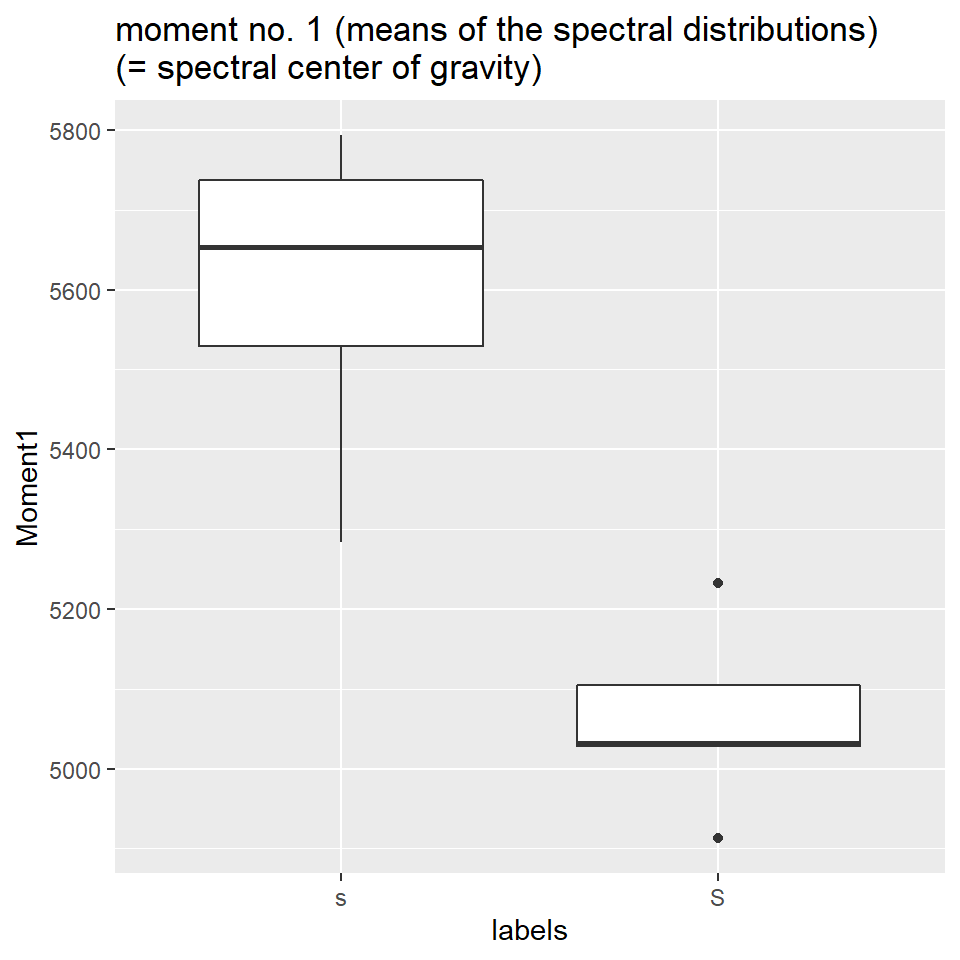
- However, there is no reason to believe that variance - expressed here by the spectral moment no. 2 - should be extremely different between the two sibilants:
# plot moment no. 2 (variance of the distribution):
ggplot(sS.moments) +
aes(x = labels, y = Moment2) +
geom_boxplot() +
ggtitle("moment no. 2 (variances of the distributions)")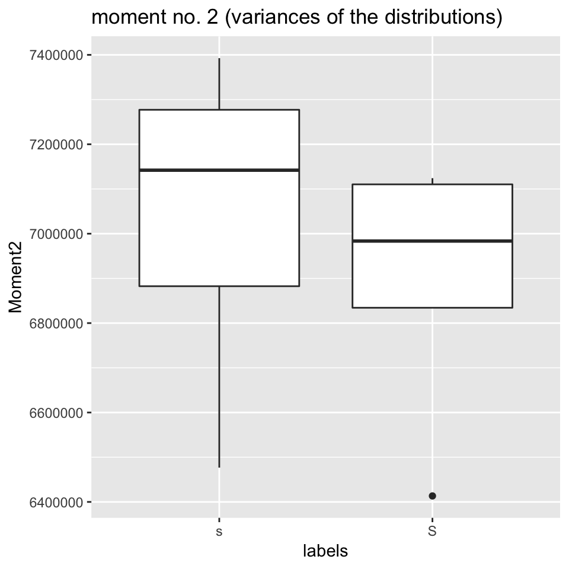
- Another parameter, the skew of the distribution of dB-values along the frequency axis, should be different, with a greater skew towards the right for [s] as compared to the post-alveolar, that is distributed more around the center of the frequency range 0-10000 Hz:
# plot moment no. 3 (skew of the distribution):
ggplot(sS.moments) +
aes(x = labels, y = Moment3) +
geom_boxplot() +
ggtitle("moment no. 3 (skew values of the distributions)")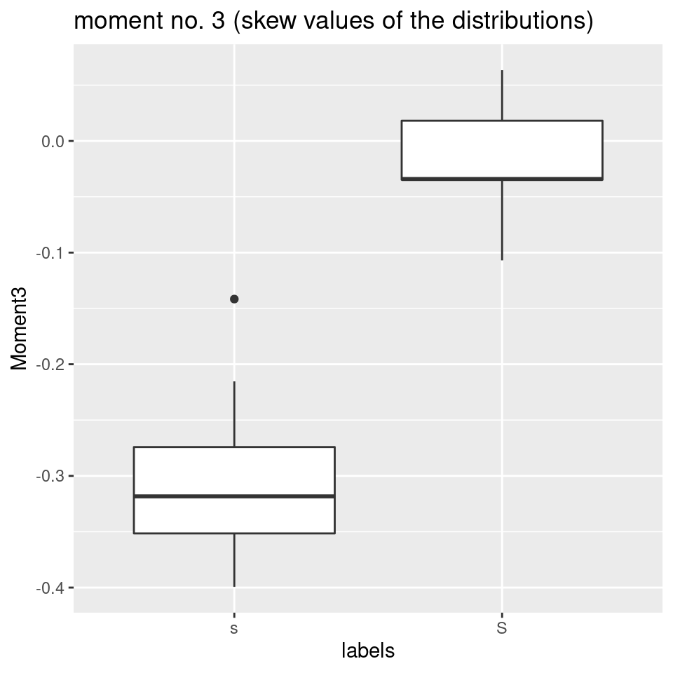
- It has been mentioned earlier, that it is usually quite difficult to use kurtosis to make predictions about the spectral differences between phonetic categories, for various reasons. In this specific case, however, kurtosis would nicely divide the two fricative types:
# plot moment no. 4 (kurtosis of the distribution):
ggplot(sS.moments) +
aes(x = labels, y = Moment4) +
geom_boxplot() +
ggtitle("moment no. 4 (kurtosis values of the distributions)")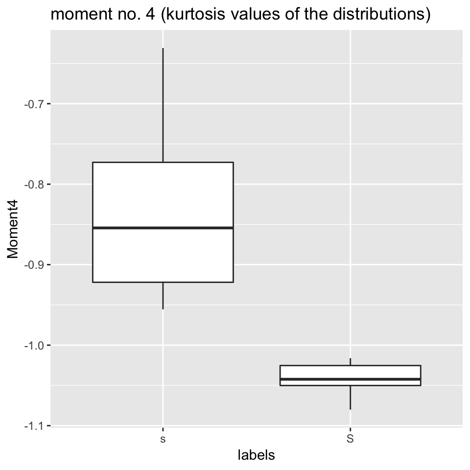
So, in our case, the two best variables that would differ most when we were trying to distinguish between alveolar and post-alveolar fricatives, would be the skew of the dB-distribution along the frequency axis (at least in out case, where frequency varies between 0 and 10000 Hz), and, as a measure for spectral center of gravity, the first spectral moment, i.e. the mean of the distribution along the frequency axis (which is quite a different thing than the first dct coefficient, which represents the mean along the dB-axis).